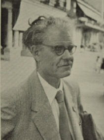

|  |
Waardenburg syndrome
A hereditary congenital defect involving pigmentation, lateral displacement
of the medial canthi and lacrimal points, and deafness.
Following medical studies at the University of Utrecht, Petrus Johannes Waardenburg trained in ophthalmology and obtained his doctorate for a dissertation on the hereditary basis of the physiological and pathological characteristics of the eye. Genetical eye diseases were his particular field of interest, and this was boosted when his wife gave birth to monozygous twin daughters, occasioning him to extended his research to include twin studies. In 1932 he suggested that Down's syndrome might be the consequence of a chromosomal aberration, a fact that was not confirmed until 27 years later, by Jérôme Jean Louis Marie Lejeune (1926-) and his colleagues.
Waardenburg was almost 50 years of age before he was habilitated as a lecturer in human genetics, and it was not until 1952 that he was finally appointed professor of genetics at the Institute of Preventative Medicine, Leiden. He was then 66 years old. At this time he collaborated with professors Adolphe Franceschetti (1896-1968) and David Klein (1908-) in the publication of a monumental two- volume work, Genetics in Ophthalmology.
During the German occupation of Holland Waardenburg fearlessly opposed Nazi Germany's racist politics. He was described as a strong personality and a man of great moral courage.
In December 1947 at the meeting of the Dutch Ophthalmological Society in Utrecht, Waardenburg presented a deaf-mute tailor aged 72 who had dystopia canthorum and partial atrophy. The first description of the Klein-Waardenburg, however, was made by the German author Karl May (1842-1912), famous for his travel and adventure stories for young people, dealing with desert Arabs or with American Indians in the wild West. In the story "The Ghost of Llano Estacado", first published in 1888, May describes his character "Fred the Juggler" thus:
"Have a close look at him, in particular his eyes, which have different colour. He is 'two-eyed'." . . . "He was of striking appearance. The first thing which one would notice on him, was a considerable hump, which spoiled his otherwise well-structured figure. His body was of middle height and of very strong build, not of a short torso, narrow chest and long arms, as it seems to be the case with most humpbacks. His round, full, clean shaven face was deeply suntanned, however terribly marked on the left side, as if some time ago an awful wound would have been badly stitched together. And in a very strange way his eyes were quite strikingly of different colour, the left was of beautiful sky blue, whereas the right was of the deepest black … If this man would not have the hump, his appearance would be of pleasing powerfulness, even perhaps impressive."
Llano Estacado, also called Staked Plains, is a portion of the High Plains of the United States, along the Texas-New Mexico border.
When Karl May was the editor of "Schacht und Hütte" in 1875-76 he mentioned in No. 21 a group of 760.000 German schoolchildren where the colour of the skin, eyes and hair was recorded. From amongst them 224.000 were found to have blue eyes, 287.000 had grey eyes, 255.000 brown, 450 black, 3 red, and one had one eye blue and the other eye was brown.
Bibliography: